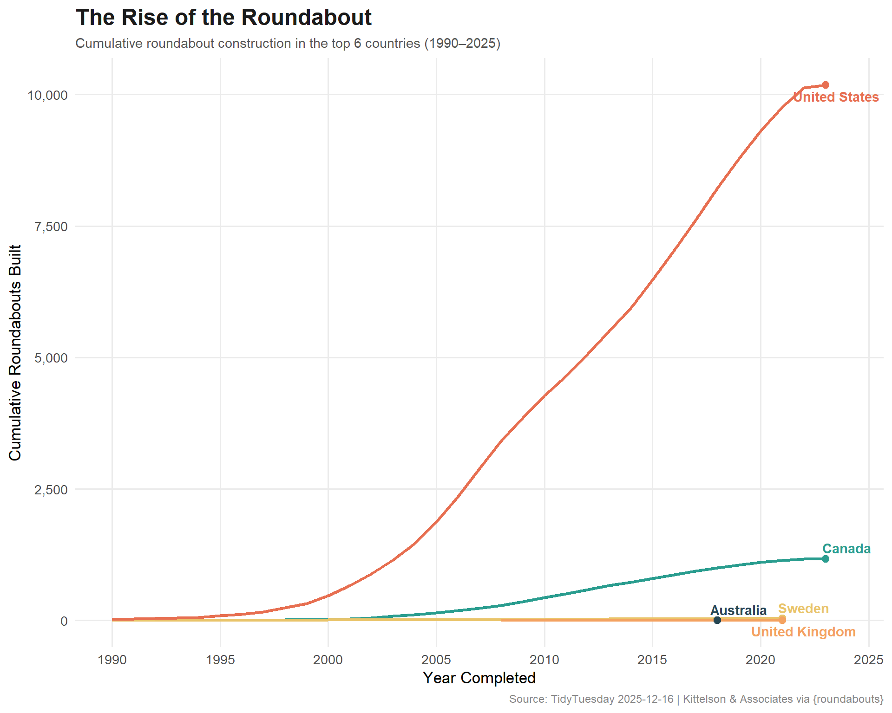
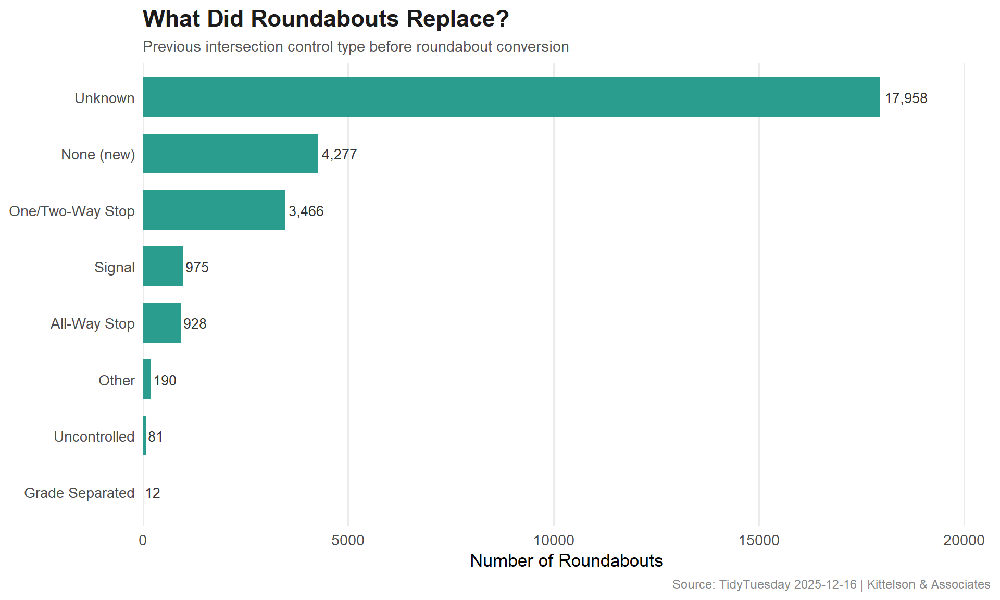

Exploring the global spread of roundabouts — how has construction evolved over time, which countries lead adoption, and what types of intersections are being replaced?
This dataset comes from the {roundabouts} R package by Emil Hvitfeldt, which accesses the Kittelson & Associates roundabouts database. The database includes over 20,000 records documenting roundabout locations, configurations, and construction details worldwide.
How has roundabout construction evolved over time, and are certain regions adopting them faster than others?
What intersection types are most commonly converted to roundabouts?
Which roundabouts feature the most unusual configurations?
Loading necessary packages
My handy booster pack that allows me to install (if needed) and load my usual and favorite packages, as well as some helpful functions.
raw <- tidytuesdayR::tt_load('2025-12-16')roundabouts <- raw$roundabouts_clean
Exploratory Data Analysis
The my_skim() function is a modified version of the skimr::skim() function that returns the number of missing data points (cells as NA) as well as the inverse (e.g.: number of rows that are notNA), the count, minimum, 25%, median, 75%, max, mean, geometric mean, and standard deviation. It also generates a little ASCII histogram. Neat!
# A tibble: 15 × 2
country n
<chr> <int>
1 United States 12952
2 Australia 3720
3 United Kingdom 1777
4 Sweden 1553
5 Canada 1246
6 New Zealand 861
7 Netherlands 760
8 Russia 472
9 Norway 467
10 France 384
11 Spain 374
12 Italy 241
13 Poland 218
14 Ireland 211
15 Finland 194
roundabouts %>%count(type, sort =TRUE)
# A tibble: 6 × 2
type n
<chr> <int>
1 Roundabout 23141
2 Other 2928
3 Traffic Calming Circle 799
4 Unknown 390
5 Signalized Roundabout/Circle 316
6 Rotary 313
roundabouts %>%count(status, sort =TRUE)
# A tibble: 3 × 2
status n
<chr> <int>
1 Existing 27759
2 Unknown 72
3 Removed 56
# Infrastructure-inspired palettecountry_cols <-c("#264653", # deep teal"#2A9D8F", # muted teal"#E9C46A", # warm yellow"#F4A261", # sandy orange"#E76F51", # burnt sienna"#6A4C93"# muted purple)ggplot(country_timeline, aes(x = year_completed, y = cumulative, color = country)) +geom_line(linewidth =1.2) +geom_point(data = country_timeline %>%group_by(country) %>%slice_max(year_completed, n =1),size =2.5 ) +geom_text_repel(data = country_timeline %>%group_by(country) %>%slice_max(year_completed, n =1),aes(label = country),nudge_x =1,size =3.8,fontface ="bold",direction ="y",segment.color ="#AAAAAA" ) +scale_x_continuous(breaks =seq(1990, 2025, 5)) +scale_y_continuous(labels = scales::comma) +scale_color_manual(values = country_cols) +labs(title ="The Rise of the Roundabout",subtitle ="Cumulative roundabout construction in the top 6 countries (1990–2025)",x ="Year Completed",y ="Cumulative Roundabouts Built",caption ="Source: TidyTuesday 2025-12-16 | Kittelson & Associates via {roundabouts}" ) +theme_minimal(base_size =13) +theme(plot.title =element_text(face ="bold", size =18, color ="#1B1B1B"),plot.subtitle =element_text(size =11, color ="#555555"),plot.caption =element_text(size =9, color ="#888888"),legend.position ="none",panel.grid.minor =element_blank() )

conversions_plot <- conversions %>%filter(n >=10) %>%mutate(previous_control_type =fct_reorder(previous_control_type, n))ggplot(conversions_plot, aes(x = previous_control_type, y = n)) +geom_col(fill ="#2A9D8F", width =0.7) +geom_text(aes(label = scales::comma(n)), hjust =-0.1, size =3.5, color ="#333333") +scale_y_continuous(expand =expansion(mult =c(0, 0.15))) +coord_flip() +labs(title ="What Did Roundabouts Replace?",subtitle ="Previous intersection control type before roundabout conversion",x =NULL,y ="Number of Roundabouts",caption ="Source: TidyTuesday 2025-12-16 | Kittelson & Associates" ) +theme_minimal(base_size =13) +theme(plot.title =element_text(face ="bold", size =17, color ="#1B1B1B"),plot.subtitle =element_text(size =11, color ="#555555"),plot.caption =element_text(size =9, color ="#888888"),panel.grid.major.y =element_blank(),panel.grid.minor =element_blank() )

Final thoughts and takeaways
The global adoption of roundabouts tells a fascinating story of traffic engineering evolution. The United States — long a holdout in the roundabout revolution — has undergone a dramatic shift, with construction accelerating sharply from the mid-2000s onward. This tracks with mounting safety research showing roundabouts reduce fatal and injury crashes by 78-82% compared to traditional signalized intersections.
The “what did they replace?” analysis reveals that stop signs and traffic signals are the most common predecessors, suggesting that planners are targeting existing problem intersections rather than building roundabouts into greenfield developments. This is a retrofit story — cities learning from crash data and choosing a safer geometry.
Note
The Kittelson database, while extensive, has known biases in its coverage. English-speaking countries are overrepresented relative to continental Europe, where roundabouts have been commonplace for decades. France alone has an estimated 30,000+ roundabouts — far more than appear in this database.